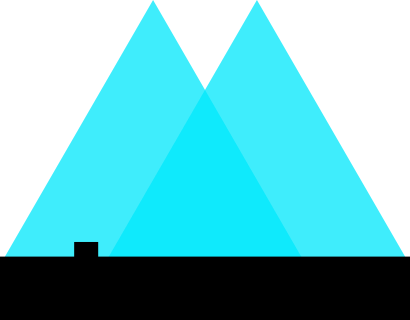

Pierwszy artykuł
Pierwszy artykuł podaje przykład indeksu górnego X2.Drugi akapit tego samego artykułu podaje przykład indeksu dolnego an.
Trzeci akapit przedstawia dodatkową spację. Wprowadzamy ją w kodzie ciągiem znaków . jako ostatni zakończony kropką.
Poniższa tabela przedstawia wybrane morza dla każdego z oceanów.
| Ocean Spokojny | Ocean Atlantycki | Ocean Indyjski | Ocean Arktyczny | Ocean Południowy | ||||||
|
Andamańskie | Baffina | Amundsena | Arabskie | Beauforta | |||||
| Jawajskie | Celtyckie | Lincolna | Davisa | |||||||
| Koralowe | Karaibskie | Lakkadiwskie | Łaptiewów | Króla Haakona VII | ||||||
| Żółte | Sargassowe | Timor | Wandela | |||||||
Ciekawostka
Morze Lakkadiwskie, Morze Lakszadiwskie – morze na Oceanie Indyjskim między Wybrzeżem Malabarskim w Indiach a archipelagami Lakszadiwów i Malediwów. Powierzchnia 786 tys. km², średnia głębokość 1929 m, maksymalna głębokość 4131 m. Średnia temperatura wód w miesiącach letnich 26-28 °C, w miesiącach zimowych 25 °C. Zasolenie od 34‰ na północy do 35,5‰ w południowej części morza.
Morze Timor (port. Mar de Timor, ang. Timor Sea, idn. Laut Timor) – morze przybrzeżne będące częścią Oceanu Indyjskiego (bywa zaliczane do Oceanu Spokojnego) położone pomiędzy wyspą Timor na północy i Terytorium Północnym w Australii na południu.
Od wschodu graniczy z Morzem Arafura. Powierzchnia wynosi ok. 615 tys. km2, a maksymalna głębokość 3310 m.
Zasolenie Morza Timor wynosi 34-35‰. Pod Morzem Timor odkryto duże złoża ropy naftowej i gazu ziemnego. O prawo do eksploatacji tych zasobów toczy się spór między Australią a Timorem Wschodnim.
Obrazek z innego katalogu (obok obrazek z odnośnikiem do samego siebie)
|  |
{kind=link}